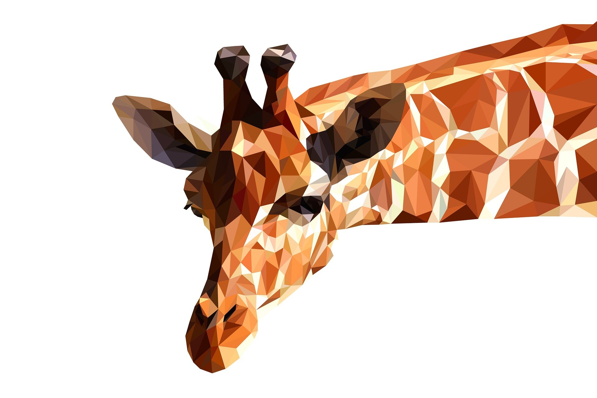
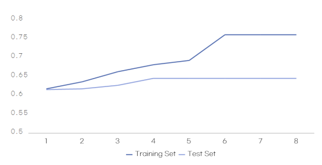
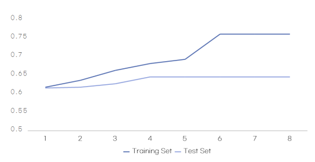
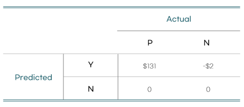

PROJECT
특정 회사를 분석해 Business problem을 찾아 분석
Business problem을 Data Science로 전환
(1) Classification Analysis
(2) Cluster Analysis
데이터 분석으로 진행할 수 있는 마케팅
1. 기업 분석으로 도달할 궁극적 목표
고객 이탈 방지
수집해야 할 데이터의 특성
(1) 고객의 사용 빈도를 알아야 함
(2) 고객의 정보가 보다 정확해야 함
(3) 고객의 기업 이용 날짜, 활동일 등이 명확히 제시되어 있어야 함
수집한 데이터의 한계점
(1) 해당 프로젝트를 진행하며 기업의 동의를 받아야했기에 정보의 정확도 부분에서 부족한 점이 있었음
> 정확한 이탈 예측 모델에 한계 존재
이탈에 대한 정의
어떤 상태를 이탈로 정의할 것인가
고객의 거래가 발생하지 않는 기간이 기준으로 정한 기준보다 오래되었을 경우
* 여기서 고객의 구매주기 데이터를 파악하여 오름차순으로 배열 후, 사분위 수를 구한다. 50%, 75% 분위수를 구해 이탈에 해당하는 고객의 비율이 많다고 판단하는 분위수를 이탈 기준으로 잡는다.
50%: 유지고객 34%, 이탈고객 66% (이탈기준)
75%: 유지고객 44%, 이탈고객 56%
5개월(중위수) 이상 활동 하지 않은 사용자를 이탈 기준으로 잡았으나, 오차를 고려해 6개월 이상 활동하지 않은 사용자를 이탈고객으로 간주
2. 이탈 고객의 예측 / 데이터분류
Information Gain 계산
> Training set 전체의 entropy 계산
0.492 * log2(0.492) + 0.508 * log2(0.492) = 0.9998
> Information Gain
기준
- 성별(남, 여)
- 데이터 입력 빈도 (i이하, 초과/i=0, 1, 2, 3, 4, 5)
- 중증도 (i 이하, 초과 / i=1, 2, 3)
- 연령대 (i이하, 초과 / i= 10대, 20대, 30대, 40대, 50대, 60대)
- 주요질환(각 질환 기준으로 해당 / 해당하지 않음)
- 가입날짜(2006년~2019년을 기준으로 이하, 초과)
*R을 사용하면 보다 빠르고 편리하게 IG를 구할 수 있음
확정된 의사결정 나무로 test set을 분류한 결과
 

Cost-Benefit Matrix
고객 기록 당 데이터 이익: 133.49$(유럽 전자건강기록 참조)
V(Y,N)(고객 프로모션 진행 시 소요 비용) = E-mail(700원)+MMS(827원)+우편(1128원) = -2$
V(Y,P)(프로모션 진행으로 얻을 수 있는 이익) = $133.49-$2.42 = $131
모델 평가
Confusion Matrix
Majority rule 적용

* Precision = 104/(104+59)=0.638
* Nagative Predictive Value (NPV) = 180/(100+180)=0.643
* Recall = 104/(104+100)=0.51
* Specificity = 180/(180+59)=0.753
Expected-Value
Expected-Value=(104/443)+(59/443)+131-2 = $30.488
따라서, 고객 1명당 약 $30
Expected-Value를 고려한 기준의 재설정 가능성
이탈로 예측한 레코드만 계산 했을때, 이탈로 예측할 확률*$131-[예측 적중 실패 확률]*$2 > 0, 이탈로 예측할 확률>0.015일때 이익
3. Cluster Analysis
신규 고객과 비슷한 연결고리를 가진 고객의 프로모션 긍, 부정 반응을 파악해 신규 고객의 프로모션 반응 예측에 사용
신규와 기존 고객 사이의 거리가 가까운 순으로 가중치 구한 후 가중치 높은 고객의 무리에 신규고객 속하도록 함
4. 데이터 분석으로 진행할 수 있는 마케팅
(1) Classification Analysis으로 진행할 수 있는 마케팅
고객별로 이탈 확률을 예측해 프로모션을 어느 고객에게 진행할지 결정가능
(1) Cluster Analysis으로 진행할 수 있는 마케팅
신규환자에게 맞춤형 프로모션 제공 가능, 비슷한 입력 빈도를 가진 사람끼리 군집을 형성해 프로모션 제공의 우선순위를 형성